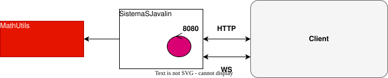

Introduction
Requirements
Requirement analysis
Realizzazione di un servizio in Java che calcoli i valori di una determinata espressione matematica.
- L'applicazione deve essere in grado di esporre un sercizio per calcolare la funzione f(x) = sin(x) + cos(sqrt(3)
* x)
- Il sistema deve essere robusto permettendo di connettersi al server sia a singola richiesta (http ndr.) che in
modo persistente (websocket ndr.)
Problem analysis
Il requisito R2 impone l'utilizzo di un web server, utilizzando il
framework Javalin, in quanto permette di esporre sia endpoint HTTP che WebSocket, soddisfacendo così il requisito R2.
- La consultazione singola si implementa naturalmente tramite protocolli sincroni HTTP.
- La sessione continua richiede una connessione persistente, realizzabile tramite Websocket.

Test plans
Project
Testing
Deployment
Maintenance
By Luca Zanarini email: luca.zanarini2@studio.unibo.it,

GIT repo: https://github.com/LZanaaa/ISS26